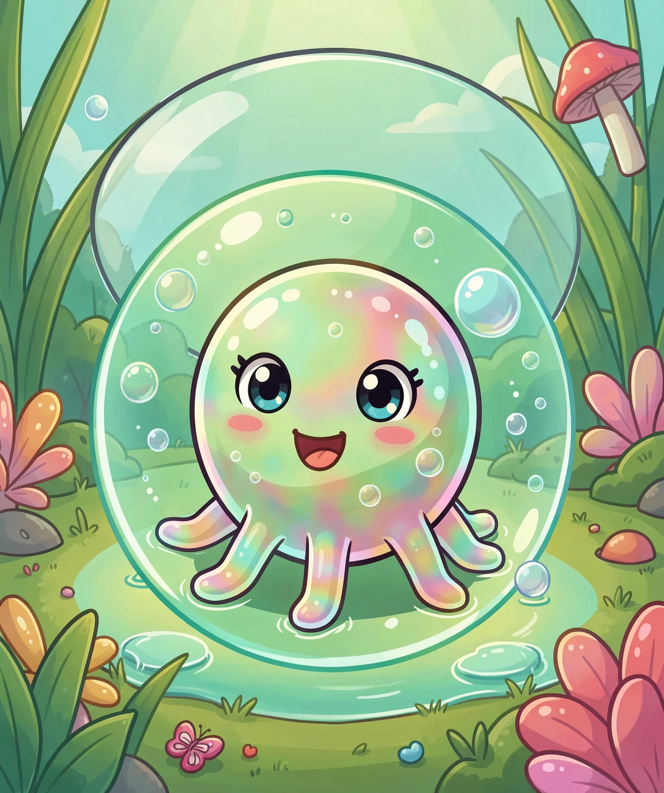
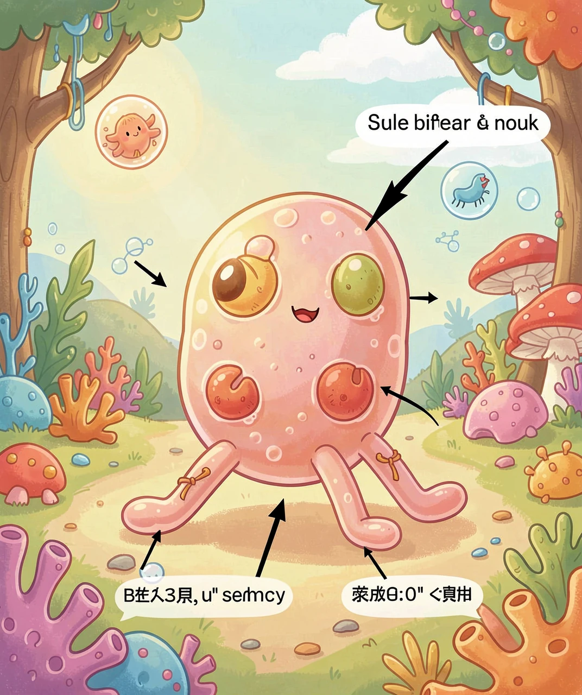
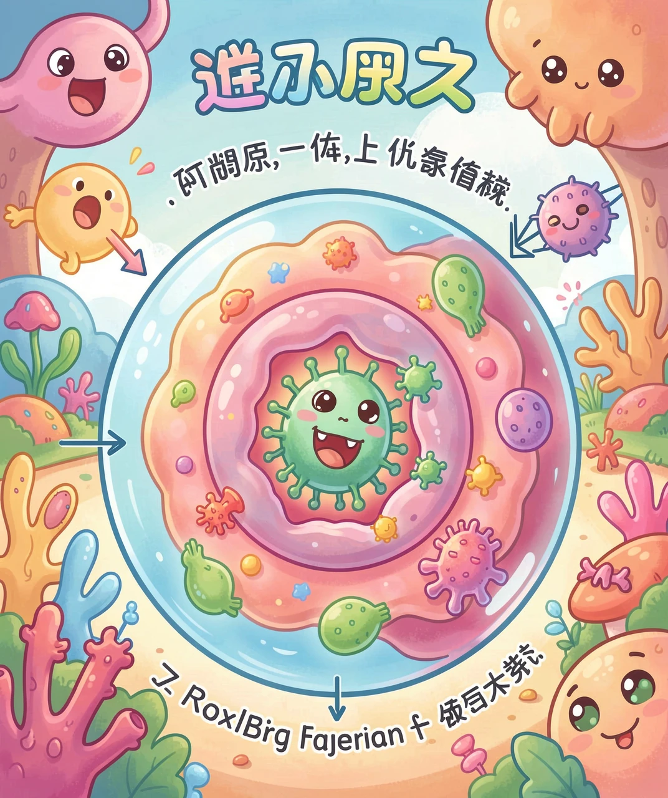
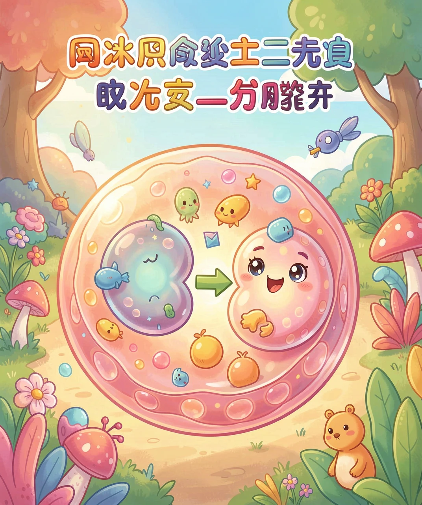
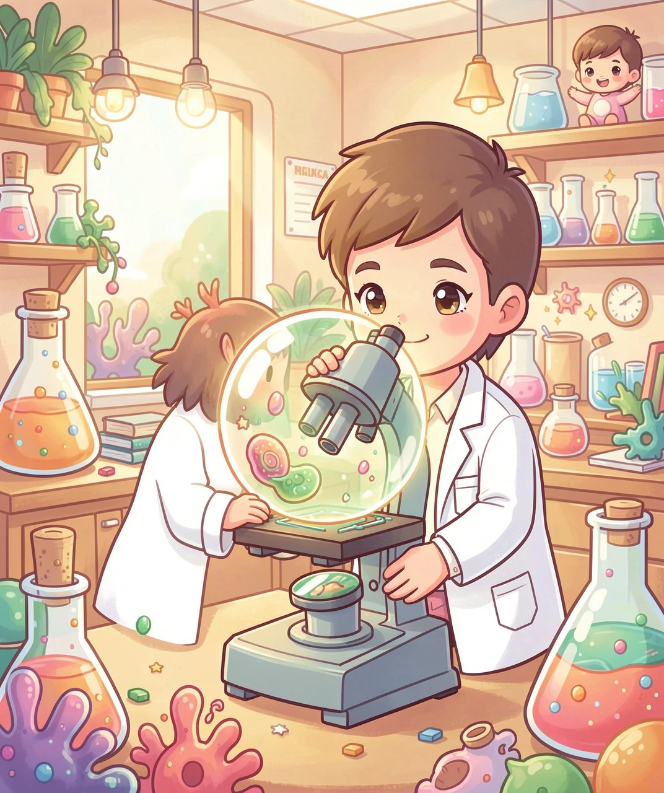

会走路的单细胞小怪兽

如果你舀起一滴池塘水，放到显微镜下看，可能会发现一个奇怪的家伙：它没有固定的形状，一会儿圆圆的，一会儿伸出几条「胳膊」，慢慢往前挪。它就是阿米巴原虫——地球上最古老、也最简单的生物之一。
「阿米巴」这个名字来自古希腊语，意思是「变化」。因为它最大的本事就是变身。你可能会问：一个没有手脚、没有骨头的小东西，到底是怎么走路的？答案藏在它身体里——它会把自己的一部分身体「挤」出去，变成一只临时的脚。

阿米巴走路的方式，叫「伪足运动」。伪足就是「假脚」的意思。它的身体像一个装满了流动「果冻」的袋子——这团果冻叫细胞质。当它想往前走，就把细胞质往一个方向挤，身体鼓出一个凸起，这个凸起就变成了临时的脚；后面的身体再跟着收回来。就这样一鼓一收，它慢慢地「流」过去了。
这个过程其实靠的是细胞质里的两种状态：一种像稀一点的液体，一种像稠一点的胶。当胶状部分变稀、液体往前冲，就推着身体鼓起来。你可以把它想象成：你用手指慢慢推一个装水的气球，气球会朝一个方向鼓起，阿米巴的运动原理就有点像这样。
最关键的是，伪足不只是用来走路，它还能「抓」东西！当阿米巴碰到一颗细菌，它会伸出伪足，像两条胳膊一样把食物环抱起来，然后整个吞进身体里。

阿米巴吃东西的方式，是科学史上一个很酷的发现，叫「吞噬作用」，也就是「用身体把食物包起来」。它没有嘴巴，所以它的办法是：用伪足把食物围住，围成一个密闭的小泡泡，然后这个泡泡掉进身体里面，变成一个「食物小房间」。
在这个小房间里，阿米巴会分泌消化液，把食物分解成养分。消化完之后，有用的部分被吸收，没用的残渣再被运到身体边缘，重新「吐」出来。整个过程就像你用一个保鲜袋装食物，吃完再把袋子扔掉一样。
那阿米巴怎么「呼吸」呢？它没有肺，靠的是整张「皮肤」——也就是细胞膜。氧气和二氧化碳直接从身体表面进进出出。因为它只有小小一粒，全身离表面都很近，所以根本不需要专门的呼吸器官。

阿米巴生小宝宝的方式，简单到不可思议——它把自己「掰」成两半。这个过程叫「二分裂」。当一个阿米巴长得足够大，它身体里的「指挥中心」细胞核会先一分为二，然后整个身体从中间裂开，变成两个一模一样的阿米巴。
因为这两个新阿米巴的遗传信息完全一样，所以它们其实是「克隆」。一个阿米巴一天可以分裂好几次，如果食物充足、温度合适，理论上一个阿米巴能在一个月里变出天文数字的后代——当然，现实中会被其他生物吃掉很多，不会真的无限增长。
当环境变糟糕的时候，比如池塘干涸了、太冷了，阿米巴还有一个保命绝招：它会缩成一团，吐出一层硬壳，变成一颗「包囊」。包囊能抵抗干燥和寒冷，像冬眠一样睡上很久，等环境好了再醒过来。

大多数阿米巴都很温和，它们生活在池塘、泥土、甚至你自己的肠道里，帮忙分解垃圾，是生态系统里重要的「清洁工」。但有一个坏家伙要小心——痢疾阿米巴（溶组织内阿米巴）。它会钻到人的肠道里搞破坏，让人拉肚子、肚子疼。
这种坏阿米巴是怎么钻进人体的呢？通常是通过被污染的水或食物。如果一个人上完厕所没洗干净手，就去碰食物，阿米巴的包囊就可能混进食物里，被下一个人吃下去。所以，饭前便后认真洗手，喝干净的水，就是对付它最好的武器。
科学家还特别喜欢研究阿米巴，因为它又简单又古老，就像一个「活化石」。研究它怎么运动、怎么吃东西，能帮我们理解细胞是怎么工作的，甚至帮我们理解更复杂的动物——包括我们人类自己，最初是怎么从单细胞一步步演化来的。
（答案：1.B 2.C 3.C 4.B 5.B）